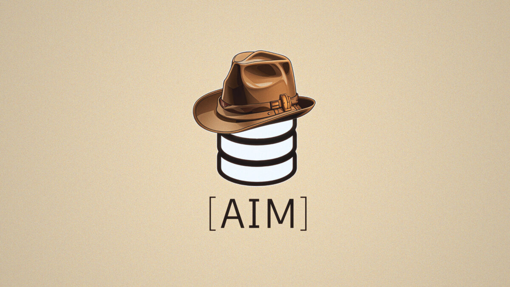

Archaeological Inventory Maker
Находки, таблицы, обмеры, списки, камеральные записи —
безошибочная, структурированная, единообразная опись
Версия 0.1 · 29 марта 2026 · Windows · Бесплатно
AIM — редактор описи находок в виде готового решения, учитывающего особенности составления археологических описей. Программа создаёт таблицу с контролем записей и учётом ошибок, исключая ошибки оператора.
Минимальный порог входа — не нужно ничего осваивать. Запускается мгновенно без установки, работает даже с флешки прямо на раскопе.
Волонтёрский проект, распространяется как freeware и рассчитан на широкое применение среди всех заинтересованных пользователей.
Все возможности →Вы задаёте правила: типы значений, диапазоны чисел, варианты из списка. В опись попадут только заданные значения.
Как в интернет-магазине — пользоваться сможет каждый. Фильтр сохраняется и передаётся на другое рабочее место.
Распакуйте архив и начинайте работу. Программа работает с флешки на любом рабочем месте.